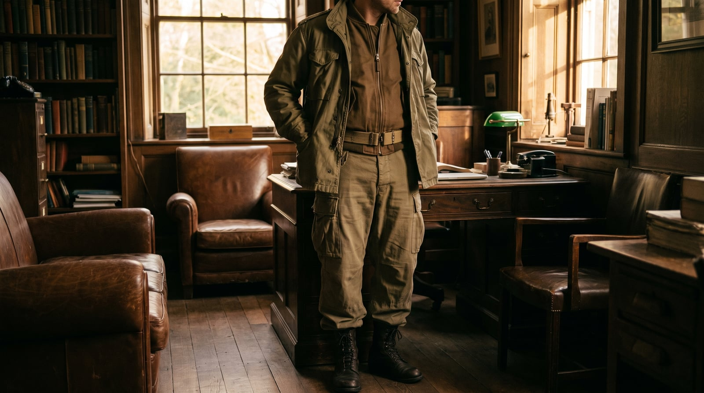
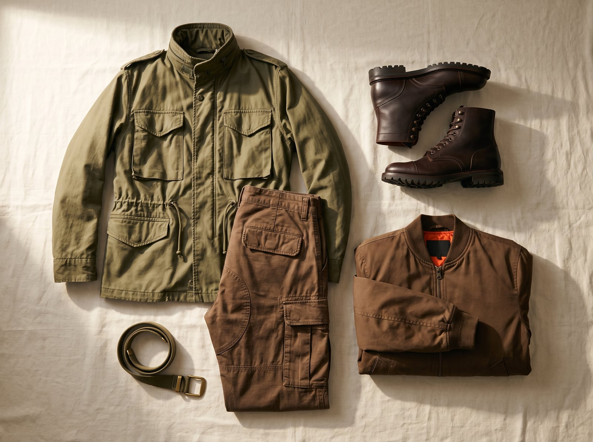

Military dress has been quietly setting the terms of civilian menswear for over a century without much acknowledgment — the trench coat was standard officer's issue in the First World War trenches it's named for, the bomber jacket came out of open-cockpit aviation in the 1920s and '30s, and cargo pants started as a 1938 British Army pattern before spending the 1990s as an American mall staple. What makes the military wardrobe distinct as its own style, rather than just a source everyone quietly borrows from, is a commitment to legibility: every pocket, strap, and epaulette exists because a quartermaster once specified exactly why.
The trademark features are utility raised to a design language: cargo pockets sized for specific equipment, epaulettes originally meant to hold a rifle strap or rank insignia, a palette of olive drab, khaki, and field grey chosen entirely for concealment, buttons and zips reinforced past the point civilian clothing usually bothers with.
It suits people who find real comfort in discipline and clear purpose — who'd rather a garment justify its every feature than carry one for decoration. There's an appealing honesty to it: nothing on a genuinely military-inspired piece is there by accident, which is more than most fashion can claim.
The M-65 field jacket, adopted by the U.S. Army in 1965, replaced earlier cotton field coats with a more weather-resistant design featuring a hidden hood, adjustable cuffs, and four large cargo pockets — a genuinely engineered garment civilian fashion adopted almost unchanged.
Actual mil-spec construction, often literal surplus stock.
Shop this →The most widely recognized commercial reproduction, still close to original spec.
Shop this →Obsessively researched reproductions using period-correct fabric and hardware.
Shop this →The British Army's 1938 Battledress trouser pattern introduced the large side cargo pocket for map and ammunition storage; the design crossed into American military use and then civilian fashion decades later, largely unchanged in its pocket placement.
Genuine cotton twill construction at an accessible price.
Shop this →Heavier fabric and a more considered, less baggy cut.
Shop this →Researched from original military patterns, often using period-correct mills.
Shop this →A rugged, laced leather boot built for marching over unpredictable terrain, the combat boot's core design — durable leather, a deep-lugged sole, a reinforced toe — has changed only incrementally across a century of military use.
Real leather and mil-spec soling at a low price.
Shop this →Better leather and comfort engineering, still built to actual military contracts.
Shop this →Premium leather and construction on a military-derived last.
Shop this →The MA-1 bomber was developed in the 1950s for open-cockpit and high-altitude flight, its knit cuffs and collar designed to seal in warmth — the orange lining, added later, let a downed pilot flip the jacket inside out to signal for rescue.
The actual reference design, still made largely to original spec.
Shop this →A more tailored cut on the same core construction.
Shop this →Researched reproductions using period-correct nylon and hardware.
Shop this →The simple cotton web belt with a metal friction or hook buckle was standard military issue precisely because it was cheap, durable, and infinitely adjustable — no tooling, no ornamentation, just a strap that holds trousers up.
Actual mil-spec webbing at the lowest possible price.
Shop this →Researched reproduction hardware from original military patterns.
Shop this →Lighter cotton ripstop in the same concealment colors, sleeves rolled per regulation, boots unchanged regardless of climate.
The M-65 liner goes in, a wool watch cap replaces nothing because it was probably already being worn, and gloves get genuinely tactical.
The field jacket was built for exactly this; a poncho goes over it if truly necessary, but the jacket alone usually suffices.
White or snow-camo overlays if authenticity matters, insulated boots, and a heavier field jacket -- this wardrobe has a documented answer for every weather condition.
The dress uniform, on the rare occasions it's called for -- a different, sharper register entirely, with every detail regulation-correct.
Wherever he was stationed, revisited; otherwise, historical battlefields and military museums, toured with real attention.
Military history almost exclusively, memoirs of specific campaigns, and field manuals read for the writing as much as the content.
Military band recordings, and otherwise not much — the radio stays off more often than it's on.
Everything has a place and stays in it, a display case for medals or memorabilia, and a level of order that borders on inspection-ready.
A genuine, self-imposed fitness routine, model-building with real precision, and an annual reunion that's never missed.